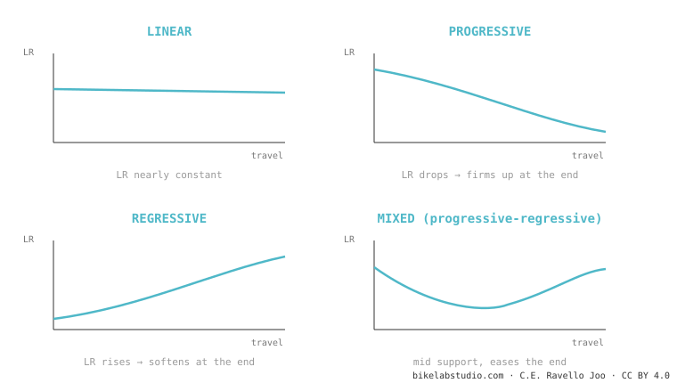

How your bike's suspension works, explained simply
Suspension doesn't exist to make you "comfortable": it exists to keep the wheel pressed to the ground. Everything else — leverage ratio, anti-squat, axle path, the odd names like VPP or DW-link — are just different ways to achieve that one thing. Here it is from scratch, in order, no marketing.
You'll leave this page understanding why your bike feels the way it does — and why your friend's, with the same travel, feels completely different. We start with the simplest idea and build up step by step. No prior knowledge needed.
First: what is suspension actually for?
Picture running and hitting a hole in the ground. If your leg stays rigid, you trip. If your knee bends in time, your foot stays on the ground and you keep running without losing a step.
That's exactly what your suspension does: it lets the wheel rise and fall following the terrain while you and the bike carry on in a straight line. A wheel pressed to the ground is a wheel with grip — to brake, to turn, to put down power. When the wheel skips and lifts off, you lose control. That's the real mission. Everything below is the engineering toolkit to do it better.
The mother conceptLeverage ratio: the lever between your wheel and the shock
Why does a long wrench loosen a bolt your bare hand can't? Leverage. The longer the arm, the more your force is multiplied.
Your rear wheel and the shock are joined by a system of bars that does exactly that: it multiplies. The leverage ratio answers a simple question: how many millimeters does the wheel move for every millimeter the shock compresses? If the wheel drops 3 mm and the shock 1 mm, that's a leverage ratio of 3:1.

Why should you care on the trail? A high number makes the suspension feel softer and more sensitive, but it demands more air pressure or a stiffer spring to hold you up. And here's what almost nobody tells you: that number isn't fixed. It changes through the travel. And the shape of how it changes — not the average — is what really decides how your bike feels.
→ Go deeper: what leverage ratio is and how it's measured The shape of the curveProgressive, linear or regressive: the suspension's "personality"
If we plot the leverage ratio through the travel, we get a curve. And that curve has personality:

That's why two bikes with the same travel and even the same average leverage ratio can feel opposite: what rules is the shape of the curve, not the average.
→ Go deeper: the progressivity curve What happens when you pedalAnti-squat: why your bike "bobs" (or not) when you pedal hard
Noticed how some bikes rock up and down when you pedal hard seated, and others stay firm? That's not the shock. It's geometry.
When you pedal, two things happen: your weight shifts back (tends to compress the suspension) and the chain pulls on the swingarm. Anti-squat measures how much those forces cancel out. At 100% the suspension stays still while pedaling; below that, it sinks and "bobs" (that's pedal bob); above, it even extends. High anti-squat makes you efficient climbing — but, as you'll see, it has a price.
→ Go deeper: what anti-squat is What happens when you brakeAnti-rise: why the rear "firms up" under braking
Anti-squat's cousin, but for braking. When you grab the rear brake, your weight goes forward and the rear tends to extend. Anti-rise measures how much the design counters that. Lots of anti-rise = the bike stays planted and stable, but the suspension gets less sensitive right when you're hitting bumps. Little = more active, but the geometry moves more. It's a balance, not a "better."
→ Go deeper: what anti-rise is Where the wheel travelsAxle path, chain growth and pedal kickback: the connected trio
When the wheel hits a root, do you want it to go up (into the hit) or back-and-up (dodging it)? That's where axle path comes in.
The axle path is the route the wheel traces as it compresses. If it goes rearward, it swallows square-edge hits far better — that's why high-pivot bikes "float." But that rearward path moves the wheel away from the bottom bracket and stretches the chain (chain growth), which in turn tugs the pedals backward: that's pedal kickback. That's why high-pivots run an idler pulley: so the chain doesn't kick your feet. All three concepts are the same phenomenon seen from three angles.
→ Go deeper: axle path → chain growth and pedal kickback Why there are so many namesThe systems: single pivot, Horst, VPP, DW-link, Maestro, high-pivot…
All those names are different ways of joining the wheel to the frame to get the leverage ratio, anti-squat and axle path the engineer wants. They're not empty marketing: they really change how the bike behaves.
The most repeated mistake online is saying "DW-link, VPP and Maestro are the same." They're not: VPP uses two links that rotate in opposite directions; DW-link and Maestro, in the same direction. That single difference changes anti-squat and axle path. Here we separate them one by one, with what each does well and badly.
How it all connects to setup
All this kinematics is the skeleton of the bike: it comes from the factory and you don't change it. What you do adjust — pressure, SAG, tokens, rebound — works on top of that skeleton. That's why the same shock feels different on two frames: the frame sets the base curve, the shock fine-tunes it. If you want to go from "understanding" to "tuning," that's the next step. And since that same kinematics moves your geometry while you ride —sag and braking change your angles live—, it connects directly with dynamic geometry in the geometry cluster.
→ All suspension setup, troubleshooting and compatibilityTell us your model and the feel you're after, and we'll explain its kinematics and how to get the most out of it. Message us on WhatsApp
© 2026 BikeLab Studio. Content under CC BY 4.0: you may copy, translate and publish it, even for commercial purposes. Citation is mandatory. Without attribution, the license terminates automatically (CC BY 4.0, §6.a) and the use becomes copyright infringement: we request the removal of the content and its deindexing. · Design and ownership: Carlos Ravello Joo